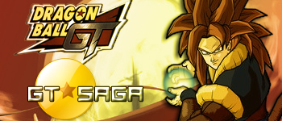

World of Dragon Ball Online

1: Talk with Goku on Dende Place.
Porozmawiaj z Goku w palacu Dende.
2: Fight with Bebi on Tsufur(Plant).
Pokonaj Bebi na planecie Plant.
3: Talk with C18 in Underground City.
Porozmawiaj z C18 w Underground City.
4: Fight with Super C17.
Pokonaj Super C17.
5: Talk with Kaito.
Porozmawiaj z Kaito.
6: Find and Fight with Ryan Shenlong.
Znajdz i Pokonaj Ryan Shenlong.
7: Find and Fight with Chii-Shenlong.
Znajdz i Pokonaj Chii-Shenlong.
8: Find and Fight with Uu Shenlong.
Znajdz i Pokonaj Uu Shenlong.
9: Find and Fight with Ryuu Shenlong.
Znajdz i Pokonaj Ryuu Shenlong.
10: Find and Fight with Suu Shenron.
Znajdz i Pokonaj Suu Shenron.
11: Find and Fight with San Shenron.
Znajdz i Pokonaj San Shenron..
12: Find and Fight with Li Shenron.
Znajdz i Pokonaj Li Shenron.
13: Talk with Goku SSJ4 in Heaven.
Porozmawiaj z Goku ssj4 w Niebie.
|